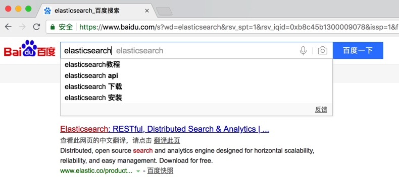
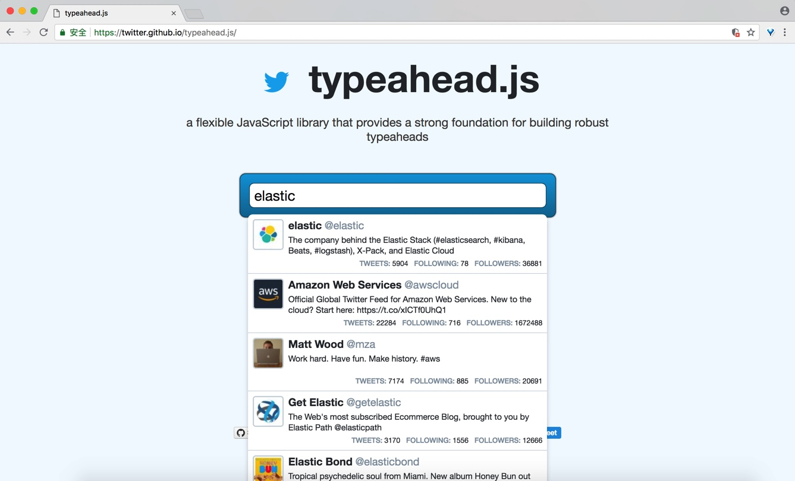
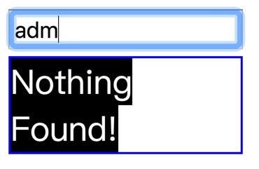
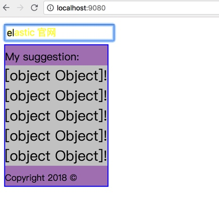
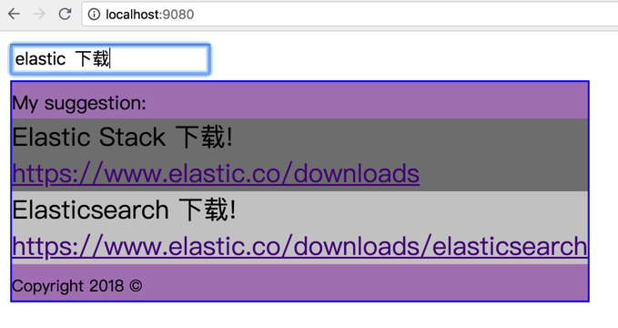
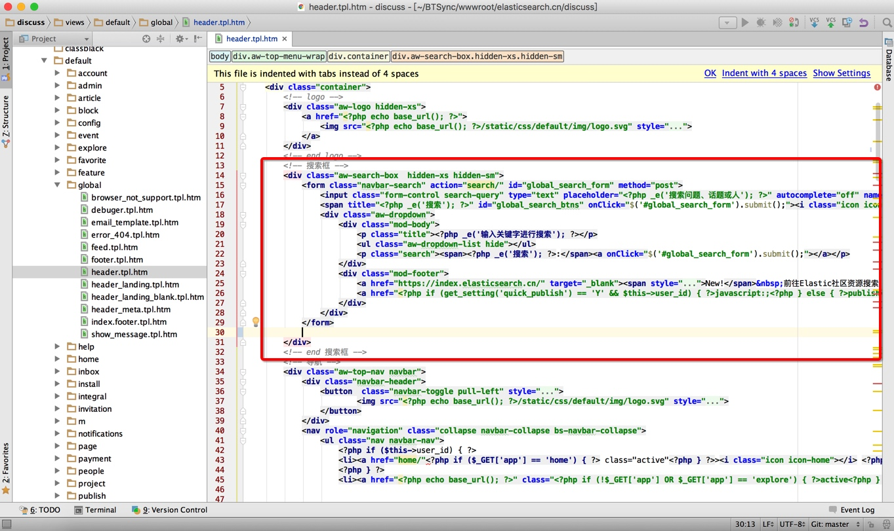
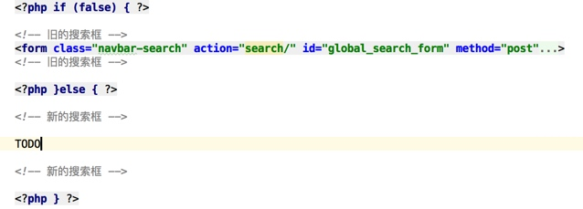
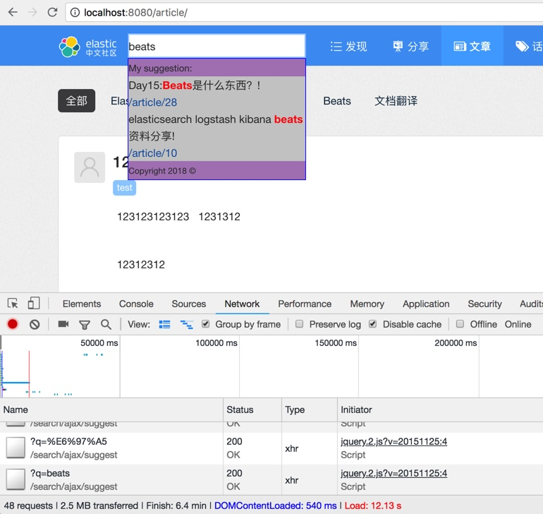

搜索提示
搜索提示、智能提示、自动完成、自动补全，都是说的一个东西，就是当用户在输入框输入想要查询的内容的时候，在关键字还没有完全输入完成之前，能够根据每次输入的部分字词进行提示，在用户一边输入的时候，给用户以提示甚至提取让用户找到最终想要的结果，从而提升用户的搜索体验，这个功能基本上是做搜索的一个基本需求。
我们本节主要来探讨一下如何实现这种搜索提示的功能。
一般搜索提示工作的原理是，当用户在文本框里面输入的时候，会触发一个输入事件，JS 在浏览器捕捉到这个事件，构造一个 AJAX 异步 HTTP 查询请求，服务器接受到这个包含了用户输入关键字的请求，通过这个关键字在服务端进行查询，尽可能找到相关的数据，发送到浏览器端，浏览器端获取服务器的响应数据，在浏览器端动态渲染出一个搜索结果列表，并显示出来。
除了上面的这些，还需要处理诸如请求的处理与回调，确保请求响应回调的先后顺序，控制请求的频率，本地的缓存的处理，另外搜索结果的展现也要做到自由布局和样式自定义。可以说要做好一个搜索提示其实不是那么容易。
UI 设计
还有一个就是搜索提示的界面设计，也很重要，我们先来看看目前主流网站的几种常见的搜索提示的实现，参考一下。
- 百度 (Baidu.com) 
国内最大的搜索引擎，百度的搜索提示，我们输入 Elasticsearch，可以看到有4个相关的词条作为提示，非常朴素简单。作为一个搜索引擎，推荐的搜索词只是方便你用来进行进一步的搜索。
- 京东（jd.com）

知名电商网站，可以看到，我们搜索 elastics 可以出现很多可能的商品名称以及多了一个对应的商品数，这样在点击搜索对应的推荐之前就知道那个关键字的商品数各是多少。
- Elastic（elastic.co）

Elastic 官方网站，同样搜索 Elastic 作为关键字，我们可以看到，推荐结果对关键字进行了字体加粗，并且推荐结果除了显示了推荐网页的标题，还显示了该网页的导航路径，这样对网页的大体分类可以有一个初步的了解。
Typeahead 的使用
为了提高效率，不重复造轮子，我们选择一个成熟好用的搜索提示框架，由 Twitter 出品的 Typeahead.js。
主要包含两个组件，Bloodhound 提示引擎和 UI View 渲染引擎，提示引擎主要用来根据给定查询来计算推荐结果，UI View 主要用来渲染推荐结果和处理 DOM 交互，两个组件可以分开使用，搭配起来就能实现强大的搜索提示功能：
- 面向最终用户的即搜即得搜索提示
- 用户输入时将第一个结果作为输入提示
- 支持自定义模板来自定义 UI 界面
- RTL 语言的支持 and input method editors.
- Highlights query matches within the suggestion.
- Triggers custom events to encourage extensibility.

Typeahead 基本使用
具体如何使用 Typeahead 呢，我们一起来看一下吧。
打开项目主页（ https://github.com/twitter/typeahead.js ）可以看到有多个下载选择，我们选择 typeahead.bundle.min.js ，这个是包含bloodhound.js 和 typeahead.jquery.js 且压缩过的包，只有 39KB 大小。
Typeahead 需要依赖 jQuery 1.9+，我们先创建一个简单的静态页面，名为 index.html，下载好 jQuery 和 Typeahead 的 JS，目录如下：

打开 index.html，编辑内容为：
<!DOCTYPE html>
<html lang="en">
<head>
<meta charset="utf-8">
<meta http-equiv="X-UA-Compatible" content="IE=edge,chrome=1">
<meta name="viewport" content="width=device-width, initial-scale=1">
</head>
<body>
<div id="demo">
<input class="typeahead" type="text" placeholder="请输入关键字">
</div>
<script src="jquery.js"></script>
<script src="typeahead.bundle.min.js"></script>
<script type="text/javascript">
//TODO
</script>
</body>
</html>
上面是一个基本的 HTML 页面骨架，我们分别引入了 jQuery 和 Typeahead 的 JS 文件，同时添加了一个名为 demo 的 div 对象，里面有一个 input 对象作为输入框。
我们继续编辑，替换上面的 //TODO 为具体的 Typeahead 调用脚本，我们这里使用了一个静态的数据源，并且通过正则匹配来判断是否匹配查询，代码内联注释如下：
//定义一个使用正则来匹配字符串的函数对象，参数是所有候选结果，返回包含关键字的结果集
var substringMatcher = function(strs) {
//具体的匹配函数定义
return function findMatches(q, cb) {
var matches, substringRegex;
//所有匹配的结果都会放在这个数组里面进行返回
matches = [];
//新建一个正则表达式对象，用来判断一个字符是不是包含关键字 `q`，第二个参数 `i` 表示忽略大小写
substrRegex = new RegExp(q, 'i');
//对传进来的 `strs` 数组进行迭代，依次用正则表达式来进行匹配，如果匹配成功，表示包含查询关键字 `q`，那么就添加到 `matches` 结果数组
$.each(strs, function(i, str) {
if (substrRegex.test(str)) {
matches.push(str);
}
});
//将匹配结果输出给回调函数
cb(matches);
};
};
//下面开始正式调用
//所有搜索结果的候选词，静态数据
var suggestions = ['Elastic', 'Elasticsearch', 'Kibana', 'Logstash', 'Beats', 'Elastic社区'];
//绑定 #demo 对象，赋予 typeahead 的搜索提示行为
$('#demo .typeahead').typeahead({
hint: true,
highlight: true,
minLength: 1
},
{
name: 'suggestions',
source: substringMatcher(suggestions)
});
保存之后，我们打开浏览器，在网页的输入框里面输入关键字 a，就可以看到搜索提示的效果了，如下：

看上去不错， 和我们期望的一样，不正是我们想要的实现的搜索提示功能么。
不过，上面的数据源是我们硬编码的静态数据，我们的搜索结果应该是远程从 Elasticsearch 里面动态检索出来的才对呀。
Typeahead 介绍
Typeahead 是如何获取数据源的呢，要回答这个问题，我们先从第一个组件 Typeahead 的 API 和概念说起。
Typeahead 提供了以下 4 组 API：
- jQuery#typeahead(options, [*datasets])
- jQuery#typeahead('val', val)
- jQuery#typeahead('destroy')
- jQuery.fn.typeahead.noConflict()
jQuery#typeahead(options, [*datasets])
对一个给定的文本输入框对象赋予 typeahead 的搜索提示能力。也就是初始化 Typeahead 的动作。
我们看一个例子：
$('.typeahead').typeahead({
minLength: 3,
highlight: true
},
{
name: 'my-dataset',
source: mySource
});
$('.typeahead')是 jQuery 的选择器，按照 CSS 名称来进行 dom 节点筛选，此处 CSS 名称为：typeahead
options 参数用来配置相关参数
支持的完整参数列表如下：
| 参数名称 | 默认值 | 说明 |
|---|---|---|
| highlight | false | 当设置为 true 的时候，搜索结果渲染的时候，会将关键字包装上 strong 标签，并设置该标签的 css 样式名为 {{classNames.highlight}} |
| hint | true | 当设置为 false 的时候，输入框不会显示输入提示 |
| autoselect | false | 当设置为 true 的时候，按回车键会默认选择第一个搜索提示结果用于搜索表单的提交 |
| minLength | 1 | 用于搜索提示的最小的字符输入长度 |
| classNames | 无 | 用于覆盖默认的 CSS 样式表 |
CSS 样式表使用方式如下：
$('.typeahead').typeahead({
classNames: {
input: 'Typeahead-input',
hint: 'Typeahead-hint',
selectable: 'Typeahead-selectable'
}
});
完整的 CSS 的样式定义：
| 名称 | 默认值 | 说明 |
|---|---|---|
| input | tt-input | 应用到 Typeahead 绑定的 input 对象 |
| hint | tt-hint | 应用到出现输入提示的 input 对象 |
| menu | tt-menu | 应用到显示搜索提示结果的菜单 |
| dataset | tt-dataset | 应用到所有的数据集对象元素 |
| suggestion | tt-suggestion | 应用到所有的搜索提示对象，每一条搜索提示记录 |
| empty | tt-empty | 应用到搜索提示结果为空的提示菜单 |
| open | tt-open | 应用到打开状态下的提示菜单 |
| cursor | tt-cursor | 应用到光标移动到搜索结果上的样式 |
| highlight | tt-highlight | 应用到包裹关键字的高亮对象 |
举个 CSS 的定义例子：
<style type="text/css">
.tt-hint{
color: yellow;
}
.tt-menu{
border: 1px solid blue;
}
.tt-dataset{
color: white;
}
.tt-suggestion{
background: #cccccc;
}
.tt-cursor{
background: gray;
}
.tt-highlight{
color: red;
}
</style>
显示效果如下：

虽然很丑，但是可以看到，通过对上面这些 CSS 的自定义，我们就能完全控制搜索结果的展示，可以说是非常灵活强大。
datasets 参数用来定义搜索提示的数据集来源
Typeahead 可以组合一个或者多个数据集，当用户的输入发生改变的时候，每一个数据集都会尝试渲染出新的搜索提示结果。
大部分情况下一个数据集就够了，只有当你的结果需要根据目录关系进行分组或排序才需要用到多个数据集。
datasets 支持以下参数来进行设置：
| 参数名称 | 默认值 | 说明 |
|---|---|---|
| source | 无 | 必填项，表示搜索提示的背后数据源，期待设置的是一个带有 (query, syncResults, asyncResults) 签名的函数，syncResults 用于同步操作下的结果调用，asyncResults 用于异步操作下的结果调用，如 AJAX 请求，source 还能是 Bloodhound 的一个实例。 |
| async | 无 | 标识数据集是否异步，如果不设置，则取决于 source 参数的函数定义，如果source 对应的函数设置了第三个参数，则表示为异步。 |
| name | 随机数 | 该数据集的名称，该名称会附加到 {{classNames.dataset}}- 作为一个 CSS 样式名称，用于自定义该数据集的 CSS 样式。 |
| limit | 5 | 最多显示多少条搜索提示。 |
| display | 文本化 | 对于一个给定的搜索结果对象，判断如何显示其内容的文本，用于当选中某条搜索提示结果之后，如何设置 input 输入框里面的文本值，可以是一个字符字段或者转换函数，默认是文本化函数。 |
| templates | 无 | 用于渲染数据集结果的模板，模板是一个将 JavaScript 对象转换为 HTML 的函数，第一个参数为 JS 数据对象，返回 HTML 输出。 |
关于 source 参数的使用，我们再回过头来看第一个例子：
source: substringMatcher(suggestions),
source 指向的是一个字符匹配函数，通过正则表达式来对一个字符数组遍历，筛选匹配关键字的结果集。
var substringMatcher = function(strs) {
return function findMatches(q, cb) {
...
//match process
...
cb(matches);
};
};
上面的 cb 就是对应的 source 的第二个参数 syncResults，即用于同步结果的回调。是不是清楚多了。
我们再看看关于 templates 的使用，我们有以下选项：
| 模板名 | 使用条件 | 说明 |
|---|---|---|
| notFound | 当某个查询返回 0 个搜索结果 | 可以设置为一个 HTML 字符串或是一个模板函数，模板函数参数包含 query 表示查询条件。 |
| pending | 当 0 个同步结果返回，但是有异步请求还在后台运行时 | 可以设置为一个 HTML 字符串或是一个模板函数，模板函数参数包含 query 表示查询条件。 |
| header | 当搜索结果展现时 | 显示在搜索结果顶部的内容，可以设置为一个 HTML 字符串或是一个模板函数，模板函数参数包含 query 表示查询条件和 suggestions 表示搜索结果。 |
| footer | 当搜索结果展现时 | 显示在搜索结果底部的内容，可以设置为一个 HTML 字符串或是一个模板函数，模板函数参数包含 query 表示查询条件和 suggestions 表示搜索结果。 |
| suggestion | 渲染单条搜索结果时 | 如果设置，只能是模板函数，相关的搜索提示对象会作为函数参数传递，默认会将 display 的值包含在一个 div 标签内，即 <div>{{value}}</div>。 |
我们设置一个 notFound 模板如下:
$('#demo .typeahead').typeahead({
hint: true,
highlight: true
},
{
name: 'suggestions',
source: substringMatcher(suggestions),
"templates":{
"notFound":function(context){ return "<span class=tt-empty>Nothing Found!</span>" }
}
});
当输入一个不存在结果的查询条件，即可获得如下效果:

然后我们再试着自定义一下搜索结果的展示，加上头部和底部的信息：
"templates":{
"notFound":function(context){ return "<span class=tt-empty>Nothing Found for query: "+context.query+"!</span>" },
"header":"<span style=font-size:12px;>My suggestion:</span>",
"footer":"<span style=font-size:10px;>Copyright 2018 ©</span>",
"suggestion":function(context){ return "<div>"+context+"!</div>" },
}
效果如下：

通过用模板来控制搜索提示结果的展示。再结合自定义的 CSS 样式，我们就可以实现任何想要的搜索结果展示了。
jQuery#typeahead('val', val)
动态设置输入框的输入文本值。
var myVal= "your keyword";
$('.typeahead').typeahead('val', myVal);
jQuery#typeahead('open')
手动打开搜索提示结果菜单。
$('.typeahead').typeahead('open');
jQuery#typeahead('close')
手动关闭搜索提示结果菜单。
$('.typeahead').typeahead('close');
jQuery#typeahead('destroy')
移除 typeahead 功能，恢复默认的 input 状态。
$('.typeahead').typeahead('destroy');
jQuery.fn.typeahead.noConflict()
返回一个 Typeahead 插件引用，并恢复 jQuery.fn.typeahead 到上一个值。用于重新定义 Typeahead 的方法名，用来避免命名冲突。
var typeahead = jQuery.fn.typeahead.noConflict();
jQuery.fn._typeahead = typeahead;
执行上面的代码后，就可以在代码里面使用 _typeahead 来代替 typeahead 来进行调用了。
Bloodhound 介绍
接下来再看一下 Typeahead 的另外一个组件 Bloodhound 的使用。
Bloodhound 是 typeahead.js 的提示引擎，提供了很多高级的特性比如：
- 支持硬编码的静态数据
- 通过数据预取来降低延迟
- 使用本地存储来智能的减少网络请求
- 支持远程数据回填到本地
- 通过限速和缓存网络请求来降低远端负载
主要提供了以下几组 API：
- new Bloodhound(options)
- Bloodhound.noConflict()
- Bloodhound#initialize(reinitialize)
- Bloodhound#add(data)
- Bloodhound#get(ids)
- Bloodhound#search(query, sync, async)
- Bloodhound#clear()
new Bloodhound(options)
Bloodhound 的构造函数，我们使用的时候，需要构造出一个 Bloodhound 的实例来使用。
示例如下:
var engine = new Bloodhound({
local: ['dog', 'pig', 'moose'],
queryTokenizer: Bloodhound.tokenizers.whitespace,
datumTokenizer: Bloodhound.tokenizers.whitespace
});
可以看到在 Bloodhound 初始化的时候，支持传入一个参数对象，支持的选项及说明如下：
| 参数名称 | 默认值 | 说明 |
|---|---|---|
| datumTokenizer | 必填项，数据分词器，设置为包含一个参数的函数 (datum)，用于将该传入参数的数据转换成数组列表 |
|
| queryTokenizer | 必填项，查询分词器，设置为一个包含参数的函数 (query)，用于将该传入参数的数据转换成数组列表 |
|
| initialize | true | 当设置为 false 的时候，Bloodhound 需要显式设置初始化状态 |
| identify | JSON.stringify |
可设置一个函数，对于一个给定的数据对象，返回一个能够标识该对象的唯一标识，默认是 JSON.stringify 函数。强烈建议自定义此函数。 |
| sufficient | 5 | 表示足够的数据结果，当从内部索引拿到的数据集不足该数值时，会通过调用 #search 函数来尝试从 remote 数据源回填数据， |
| sorter | 设置一个排序函数来对结果进行排序。 | |
| local | 可以设置为一个数组或者一个返回数组的函数，在调用 #initialize 函数的时候添加到本地索引中。 |
|
| prefetch | 可以设置一个包含数组的 URL 或 JSON 文件地址，支持若干配置参数。 | |
| remote | 可以设置为一个 URL 地址用来当本地索引数据不够时从远程获取更多数据。支持若干配置参数。 |
Prefech 参数用于初始化的时候获取数据
如果浏览器支持本地存储，如 Chrome，则数据会被缓存在本地以避免后续页面额外的网络开销，由于一般来说，我们的本地存储空间受限于浏览器，我们应加速这个只是一个最前端的一级缓存，也不应包含太多的数据，不过对于我们缓存一些用户常见的数据应该足够了，比如用户最近的查询历史，用户经常访问的数据等。
Prefetch 参数支持的配置选项：
| 参数名 | 默认值 | 说明 |
|---|---|---|
| url | 必填项，用于加载数据的 URL 地址。 | |
| cache | true | 设置成 false 则不会走本地缓存。 |
| ttl | 86400000（1天） | 缓存数据的过期时间，默认1天，单位毫秒。 |
| cacheKey | url | 用于保存本地缓存的 key，默认就是 URL。 |
| thumbprint | 数据指纹，用于判断本地数据是否和远程数据是否一致，如果不一致，会重新获取远程数据。 | |
| prepare | identify | 在正式发送远程加载请求之前，用于处理请求参数的函数。包含签名 prepare(settings), 返回的也是 settings。默认是 identify 参数的函数定义。 |
| transform | identify | 用于转换请求返回数据的函数，要求包含签名 transform(response)。默认是 identify 参数的函数定义。 |
Remote 参数用于从远端获取额外的数据
为了避免对远端服务器产生过度的请求，remote 的请求是限速过的。
Remote 参数支持的配置选项：
| 参数名称 | 默认值 | 说明 |
|---|---|---|
| url | 必填项，请求的 URL 地址。 | |
| prepare | identify | 同 prefetch，用于请求前的参数干预。函数签名为 prepare(query, settings)，第一个 query 参数值为 #search 查询，第二个 settings 为 Bloodhound 所内部创建。默认是 identify 参数的函数定义。 |
| wildcard | 设置一个通配符表示，用于 prepare 方法的使用 | |
| rateLimitBy | debounce | 用于网络限速的方法，支持 debounce 和 throttle |
| rateLimitWait | 300 | 用于参数 rateLimitBy 使用的时间间隔，单位毫秒。 |
| transform | identify | 用于转换请求返回数据的函数，要求包含签名 transform(response)。默认是 identify 参数的函数定义。 |
var result = new Bloodhound({
datumTokenizer: Bloodhound.tokenizers.obj.whitespace('value'),
queryTokenizer: Bloodhound.tokenizers.whitespace,
remote: {
url: '/search/suggest?q=%QUERY',
wildcard: '%QUERY'
}
});
Bloodhound.noConflict()
返回新的实例，用于避免命名冲突。
var Dachshund = Bloodhound.noConflict();
Bloodhound#initialize(reinitialize)
用于手动初始化对象。准备数据，添加索引以及各项初始化操作。在没有初始化之前，#get 和 #search 是没有办法操作的。除非 initialize 被设置成 false，否则在构造函数里面是会自动调用的。
Bloodhound#add(data)
用于接收一个数组对象作为参数，然后添加到本地的内部索引中。
engine.add([{ val: 'one' }, { val: 'two' }]);
Bloodhound#get(ids)
通过 ID 从本地索引返回数据。
var engine = new Bloodhound({
local: [{ id: 1, name: 'dog' }, { id: 2, name: 'pig' }],
identify: function(obj) { return obj.id; },
queryTokenizer: Bloodhound.tokenizers.whitespace,
datumTokenizer: Bloodhound.tokenizers.whitespace
});
engine.get([1, 3]); // [{ id: 1, name: 'dog' }, null]
Bloodhound#search(query, sync, async)
返回包含 query 查询的数据，本地索引找到的数据会被返回到 sync 结果中，如果本地返回的数据不够数，会构建 remote 请求，该请求的结果响应会通过 async 返回。
bloodhound.get(myQuery, sync, async);
function sync(datums) {
console.log('datums from `local`, `prefetch`, and `#add`');
console.log(datums);
}
function async(datums) {
console.log('datums from `remote`');
console.log(datums);
}
Bloodhound#clear()
清理本地内部索引。
Typeahead 功能集成
上面介绍了 Typeahead 的基本功能，知道了 Typeahead 支持两种方式来从远程获取数据：Prefetch 和 Remote。
我们可以将小部分静态数据整理成 JSON 格式，然后通过 API 暴露出来，再通过 Prefetch 加装到本地。对于常见的查询需求，比如热门搜索、推荐搜索词等，可以快速得到结果，大大提升用户体验。
而对于其他的查询请求，我们可以构造一个请求发送给后端的 PHP 接口，PHP 接口再去请求 Elasticsearch 进行查询，然后将返回结果交给 Typeahead 封装显示在搜索提示结果列表。
加载本地数据
我们这节主要用来实现热门搜索、推荐搜索词的搜索。
我们基于前面的演示页面进行修改，我们先定义一个包含搜索热词 JSON 对象数组的文件 top_search.json，内容如下：
[{
"keyword":"Elastic 官网",
"url":"https://elastic.co"
},{
"keyword":"Elastic 中文社区",
"url":"https://elastic.co"
},{
"keyword":"Elastic 源码 @Github",
"url":"https://github.com/elastic"
},{
"keyword":"Elastic Stack 下载",
"url":"https://www.elastic.co/downloads"
},{
"keyword":"Elasticsearch 下载",
"url":"https://www.elastic.co/downloads/elasticsearch"
},{
"keyword":"Elastic 英文社区",
"url":"https://discuss.elastic.co"
}]
目录结构如下：

然后我们编辑 index.html，修改其中的脚本部分：
<script type="text/javascript">
//定义一个 Prefech 的 Bloodhound 实例，数据来源为一个 json 文件
var topSearch = new Bloodhound({
datumTokenizer: Bloodhound.tokenizers.obj.whitespace('keyword'),
queryTokenizer: Bloodhound.tokenizers.whitespace,
prefetch: 'top_search.json'
});
//绑定 #demo 对象，赋予 typeahead 的搜索提示行为
$('#demo .typeahead').typeahead({
hint: true,
highlight: true,
minLength: 1,
autoselect: false
},
{
name: 'topSearch',
displayKey: 'keyword',
source: topSearch,
"templates":{
"notFound":function(context){ return "<span class=tt-empty>Nothing Found for query: "+context.query+"!</span>" },
"header":"<span style=font-size:12px;>My suggestion:</span>",
"footer":"<span style=font-size:10px;>Copyright 2018 ©</span>",
"suggestion":function(context){ return "<div>"+context+"!</div>" },
}
});
</script>
我们在该目录运行一个命令来启动一个简单的 HTTP 服务器:
python -m SimpleHTTPServer 9080
使用浏览器打开 http://localhost:9080，然后就会出现我们熟悉的输入框，我们输入 el，效果如下:

可以看到，有5条搜索结果，不过怎么显示都是 object 啊，恩，原来是模板还没有修改，搜索结果不是一个字符串，而是一个对象，我们需要明确要操作的具体字段，修改如下：
"templates":{
"notFound":function(context){ return "<span class=tt-empty>Nothing Found for query: "+context.query+"!</span>" },
"header":"<span style=font-size:12px;>My suggestion:</span>",
"footer":"<span style=font-size:10px;>Copyright 2018 ©</span>",
"suggestion":function(context){ return '<div>'+context.keyword+'!<br/><span style=font-size=2px><a href=""'+context["url"]+'" >'+context.url+'</a></span></div>' }
}
更新后的效果如下：

是不是很赞?
我们不仅从远程下载了特定的数据集，而且还自定义了展现样式，加上了链接可以点击前往搜索结果对应的 URL 地址，你甚至还可以加上标签、时间、目录、图片等属性来丰富展现效果。
获取远程数据
我们同样在目录新建一个 source.json 的数据文件：
[{
"keyword":"Elastic 官网[From Source]",
"url":"https://elastic.co"
},{
"keyword":"Elastic 中文社区[From Source]",
"url":"https://elastic.co"
}
...
]
编辑 index.html 文件，修改脚本，新增一个 remote 配置:
var topSearch = new Bloodhound({
datumTokenizer: Bloodhound.tokenizers.obj.whitespace('keyword'),
queryTokenizer: Bloodhound.tokenizers.whitespace,
prefetch: 'top_search.json',
remote: 'remote.json'
});
重新打开浏览器测试输入：elastic s 搜索：

可以看到输入 elastic 的时候，都是走的本地缓存，中间输入字符的时候，并没有产生额外的网络请求，只有当输入到 s 的时候，候选结果不足5个，这个时候才开始访问 remote 的数据源，完美！
与社区网站的集成
这一节开始讨论怎么改造社区网站了，社区网站是 PHP 写的，用的是 MVC 的架构。
首先，我们将 typeahead.bundle.min.js 文件拷贝到网站的静态资源目录：/static/js/typeahead.bundle.min.js
然后打开模板文件：/views/default/global/header.tpl.htm，找到搜索表单所在的位置，在14行和29行之间，如下图:

为了尽量减少对原系统的侵入，我们不直接修改原搜索功能，而是采取功能替换的方式来进行。
我们这里加上一个开关来进行判断，为方便测试，我们设置为 false，即每次都是走新的搜索，后续可以改成动态配置来切换开关，如下图：

然后我们在 //TODO 的位置引入我们新的 js 文件和加上之前的测试代码，如下图：

把两个 json 文件拷贝到网站的根目录，然后就可以打开网站测试一下搜索的集成效果了，如下图：

简直完美，额，暂时把样式的问题忽略一下，后期可以再一起美化😊。
与 Elasticsearch 的集成
接下来要做的就是提供一个 API 来替换掉固定的 remote.json 数据源，使用来自 Elasticsearch 的数据。
我们打开文件：/app/search/ajax.php，新增一个帮助函数 post，用于发送 RESTful 请求。
public function post($url,$queryDSL){
$ch = curl_init();
curl_setopt($ch, CURLOPT_URL, $url);
curl_setopt($ch, CURLOPT_RETURNTRANSFER, 1);
curl_setopt($ch, CURLOPT_POST, 1);
$data_string=$queryDSL;
$data_string= str_replace('\\r\\n',"",$data_string);
$data_string= str_replace('\r\n',"",$data_string);
$data_string= str_replace('\\r',"",$data_string);
$data_string= str_replace('\r',"",$data_string);
$data_string= str_replace('\n',"",$data_string);
$data_string= str_replace('\\n',"",$data_string);
// $username = "elastic";
// $password = "changeme";
// if(isset($username)&&isset($password)){
// curl_setopt($ch, CURLOPT_USERPWD, $username . ":" . $password);
// }
curl_setopt($ch, CURLOPT_POSTFIELDS, $data_string);
curl_setopt($ch, CURLOPT_HTTPHEADER, array(
'Content-Type: application/json; charset=utf-8',
'Content-Length: ' . strlen($data_string))
);
ob_start();
$json=curl_exec($ch);
$return_content =$json;
ob_end_clean();
//如果请求执行成功会返回200的状态码，则返回响应结果
$return_code = curl_getinfo($ch, CURLINFO_HTTP_CODE);
if($return_code==200){
return$return_content;
}
return null;
}
然后再新建一个名为 suggest_action 的函数用来处理封装 Elasticsearch 的查询请求，如下：
public function suggest_action(){
//获取请求参数，参数名为 q
$keyword=$_GET['q'];
//固定的搜索地址，来自索引 forum-mysql
$url="http://localhost:9200/forum-mysql/_search";
//封装 QueryDSL 查询，过滤返回字段
$dsl='{
"query": {
"match": {
"title": "'.$keyword.'"
}
},"_source": ["title","id","uid","views"]
}';
//执行 HTTP 请求，发送给 ES
$response=self::post($url,$dsl);
if($response!=null){
$result=array();
$o=json_decode($response,true);
if(isset($o["hits"]["hits"])){
foreach ($o["hits"]["hits"] as $v){
//重新封装字段名称，符合搜索提示的结果规范
$x["keyword"]=$v["_source"]["title"];
//根据文章的 ID 来拼接文章的 URL
$x["url"]="/article/".$v["_source"]["id"];
//放入到结果数组
array_push($result,$x);
}
}
//生成 JSON 格式，输出
echo json_encode($result);
}
}
现在我们打开浏览器，访问该接口地址：http://localhost:8080/search/ajax/suggest/?q=beats，应该就能看到来自 Elasticsearch 的数据了：

因为我们请求的地址已经变化，并且要根据每次输入的关键字自动拼接请求串，所以还需要修改 Typeahead 的调用代码，打开 /views/default/global/header.tpl.htm 修改如下：
var topSearch = new Bloodhound({
datumTokenizer: Bloodhound.tokenizers.obj.whitespace('keyword'),
queryTokenizer: Bloodhound.tokenizers.whitespace,
prefetch: 'top_search.json',
remote: {
url: '/search/ajax/suggest/?q=%QUERY',
wildcard: '%QUERY'
}
});
保存更新，再次打开浏览器，我们点击搜索框，输入关键字，就能出现来自真实数据的搜索提示了：

大功告成。
小知识
什么是 AJAX？
AJAX = 异步 JavaScript 和 XML。
AJAX 是一种在无需重新加载整个网页的情况下，能够更新部分网页的技术。
通过在后台与服务器进行少量数据交换，AJAX 可以使网页实现异步更新。这意味着可以在不重新加载整个网页的情况下，对网页的某部分进行更新。
而传统的网页（不使用 AJAX）如果需要更新内容，必需重载整个网页面。